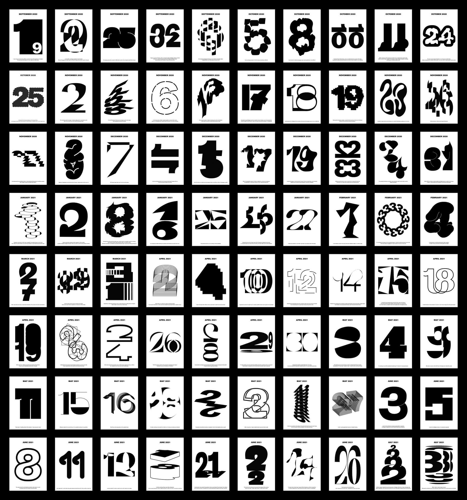

Calendar + Diary
Calendiary : 80 days
Calendiary : E-Book


Archive Video
- 2021
- Basiselemente Typografie
- Merz-Akademie SS
‘Calendiary’는 ‘Calendar’와 ‘Diary’의 합성어로‚ 독일 교환학생 중 사용했던 캘린더 속 80개의 날짜들을 그날의 기분과 사건에 따라 시각적으로 기록한 타이포그래피 프로젝트이다. ‘뜯어 쓰는 연간 캘린더’의 제본 방식과 해당 종이의 얇고 투명한 질감에 영감을 받아 직접 인쇄 및 제본하였다.
From my calendar, I have got the idea of the memories during the
exchange program in Germany. Based on these, I collected about
100 memorable dates from September 2020 to July 2021.
So,
following them, I designed 80 number graphics which can remind me
of the moments and what I felt back then.
Moreover, ‘Calendiary’ is the mixed word with ‘calendar’ and ‘diary’.
It looks like a outwardly simple calendar, but you can also find that it contains
private memories, which were expressed by not only sentences but
also graphic images.